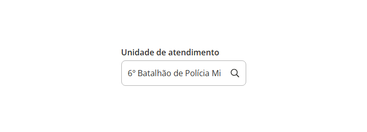

SETDIG · Superintendência de Governo Digital
O cidadão vai ver um formulário no X-Forms e outro no Orquestrador?
A pergunta desta apresentação, com a resposta e a prova.
A resposta
Não. As duas ferramentas usam os mesmos componentes.
Design System MSseção Formulários: campo, lista, chave, arquivo…
X-Formso órgão monta na tela
Orquestradora TI do órgão programa
= o cidadão vê o mesmo formulário
Decidido com a X-VIA (Aylime e Leonardo) em 24/11/2026.
Prova 1 · X-Forms
O campo do X-Forms é o campo do Design System.
Design Systemds-input ↗
X-Forms · tela do cidadãoEmitir certificado do ensino médio

Mesmo rótulo, mesmo asterisco, mesma caixa, mesma fonte.
Prova 2 · Orquestrador
Um serviço real do Orquestrador já usa os mesmos componentes.
Design Systemds-combobox ↗

Design Systemds-switch ↗
Orquestrador · no ar em devConsultar delegacias ↗
ds-combobox
ds-combobox
ds-switch
Conferido no código da página: são os componentes do DS, não uma cópia.
E a diferença que aparece?
A tela diferente é só a de quem monta o formulário.
Backoffice · quem montaDesigner do X-Forms

Cidadão · Visualizaro que vai ao ar
Mudar o backoffice custa caro e não muda nada para o cidadão. A SETDIG confere sempre no Visualizar.
E quando falta um componente?
Ninguém cria componente só para o próprio serviço.
- Confereno Storybook se ele já existe
- Desenhano Figma, pelo UX da X-VIA
- Publicano Design System
- Usano X-Forms e no Orquestrador
Ainda faltam no Design System:
máscara (CPF, CEP)grupo de radioopção em card · em criação
Assim o componente novo nasce igual nas duas ferramentas.
Para ver tudo